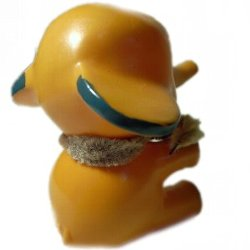
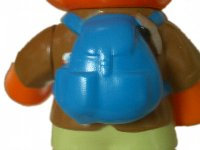
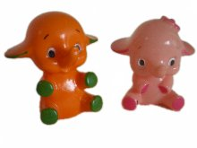
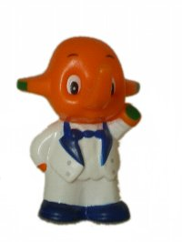
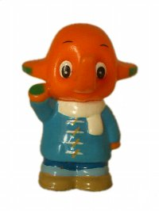
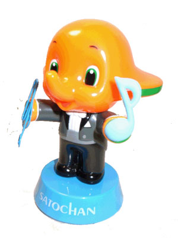

□サトちゃんSA-8型□
|
|

|
このサトちゃんは昭和36年以降、
現在のサトちゃんになるまでに活躍していたものです。
このサトちゃんはオークションで購入しました。
古い薬屋さんが廃業されたりすると、デッドストックとして
古いおまけが出てくることがあるそうです。これを譲っていただいたときもそんな感じでした。
細長い箱の中にたくさん入っていました。
裏に「M・P」と彫られています。モダンプラスチック製。当時、こういったノベルティは、
モダンプラスチック社が作ることが多かったようです。モダンプラスチックって、響きが好きです。
ひとつひとつ手塗りされていて、ちょっと適当なところもあるけれど（笑）よい味が出ています。
ちなみにこのサトちゃんの眉毛はマジックペンで描かれています。
（2001年入手。）
|

「クスリはサトウ」
|

後ろはこんな感じです。
かわいいしっぽもちゃんとあります♪♪♪♪
|
□ランドセルサトちゃん□
|
|

|
眉毛はSA-8型と同じくやっぱりマジックペンで描かれています。ひとつひとつが手塗りのようで、眉毛の太さはまちまちです。品番も合ったと思いますが、本来ランドセルサトちゃんが入っている袋に入っていない状態で入手したので、詳細は分かりません。
いろいろなランドセルサトちゃんを見比べて、このサトちゃんが気に入って購入しました。この眉毛は比較的細いものです。中にはスプレーのようなもので描かれていて、北斗の拳のケンシロウのようなサトちゃんもいます（笑）同じ人形なのに、眉毛ひとつでとても表情が変わってしまうのです。
「クスリはサトウ」 この貯金箱は500円が入りません。
試したことはありませんが、いくら入るのかな･･･？
あまり入らないような気もします。昔の硬貨ならたくさん入るの
でしょうか。ランドセル、靴、目、鼻などすべて手塗りです。
赤い靴の裏に小さく「MODERN PLASTICS JAPAN」とあります。
かなり凝視しないとわからない状態ではあります。
（2002年入手。）
|
|

|
□ドクターサトちゃん貯金箱□
|
|

|
20世紀ファイナルカーニバルのもの。
この大きさだと500円の硬貨もきちんと入ります。
今ではどうなっているのかわかりませんが、
このドクターサトちゃん、サトコちゃんにはニセモノが存在しました。
（￣ー￣；）
私は所有していないので画像で比較できないのが残念ですが、
ニセモノは、すんごいブサイクでした。あまりにも似てなくて、
あれは手に入れておくべきだったのかも・・・
と今では思います（笑）
（2003年入手。）
|
□アドベンチャーサトちゃんサトコちゃん貯金箱□
|
|
|


|

2000年アドベンチャーカーニバルのもの。
（2001年入手。）
|
□サトちゃん指人形□
|
|
|
|
薬局キャラと言えば、ケロちゃんコロちゃんもしくはこのサトちゃん（笑）指人形です。
私が一番最初に手にしたサトちゃんです。
|
|

|
一つ前のサトちゃんとサトコちゃん。昭和50年後半に配られていた指人形です。
訂正：1992年春のカーニバルの指人形です。
下がりまゆげに「クスリはサトウ」の文字。
愛嬌があります。
|
|

タキシード
何年か前に店頭で飾るためのディスプレイについていたものと思いますが、何のキャンペーンだったのか忘れてしまいました。音楽隊の指揮者です。
|

コート
これが何のキャンペーンで配られていたのか
詳細がわかりません。色違いの黄色もあるようです。
|
□クリップ&メモホルダー□
|
|
|

|
|
|
|
|
|